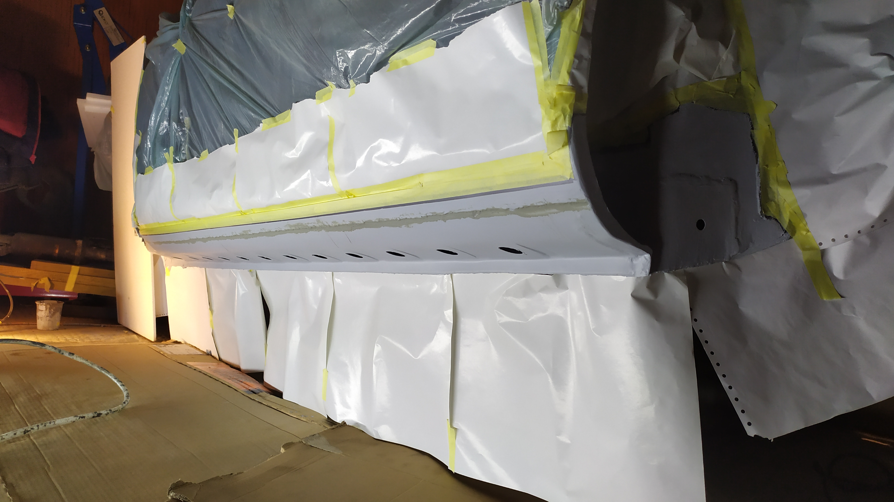
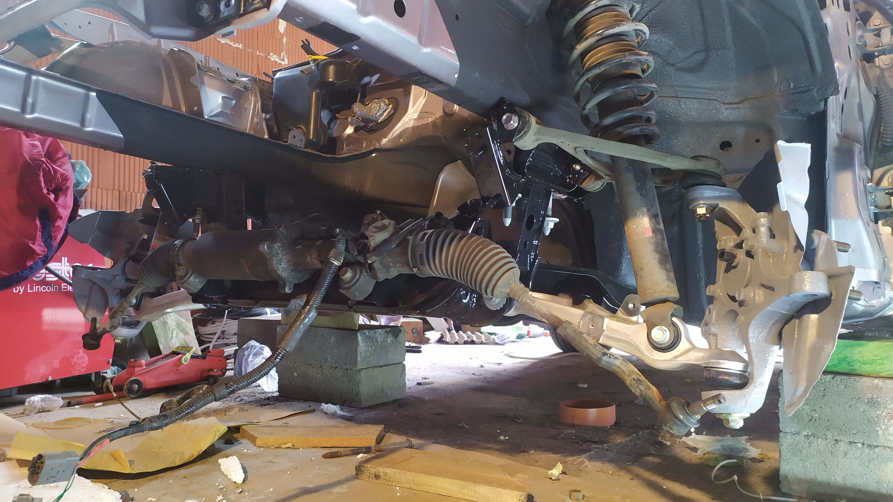
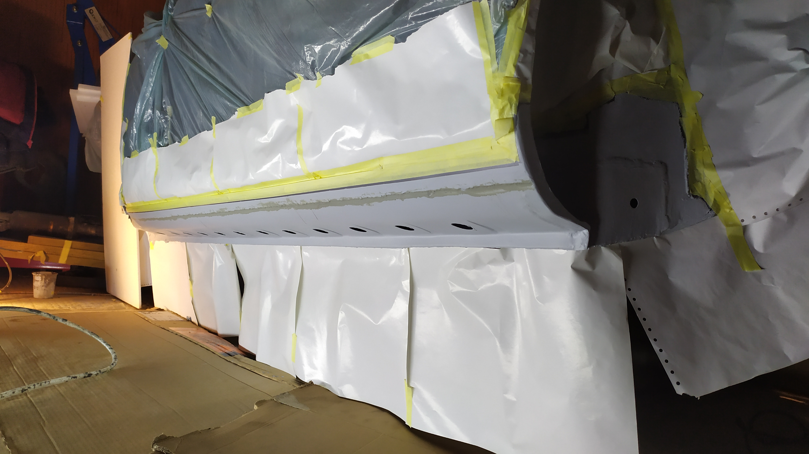
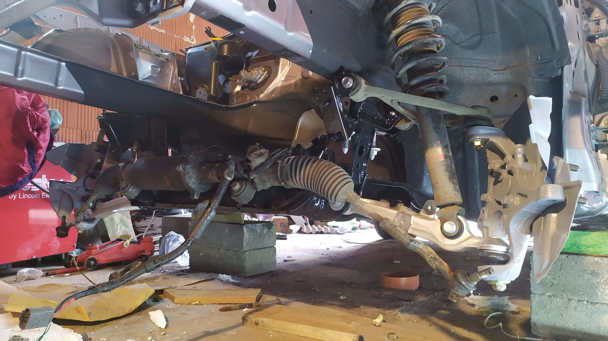
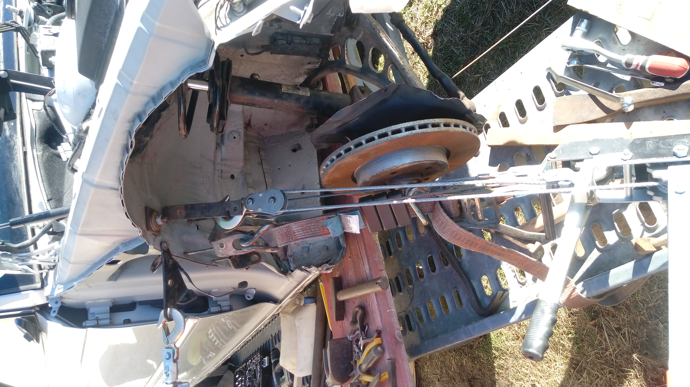
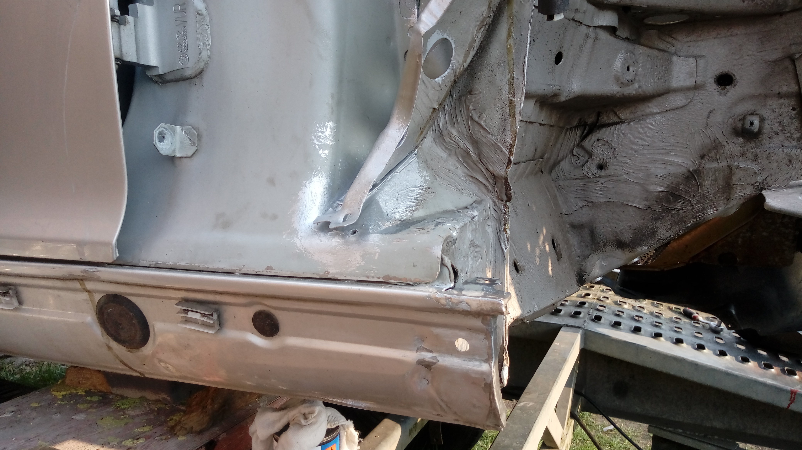
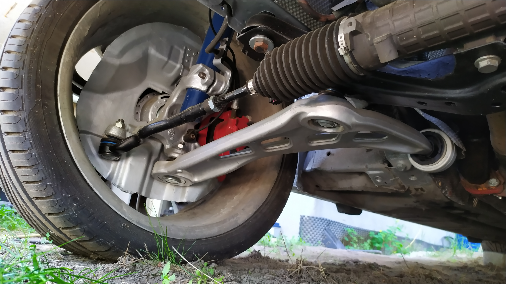
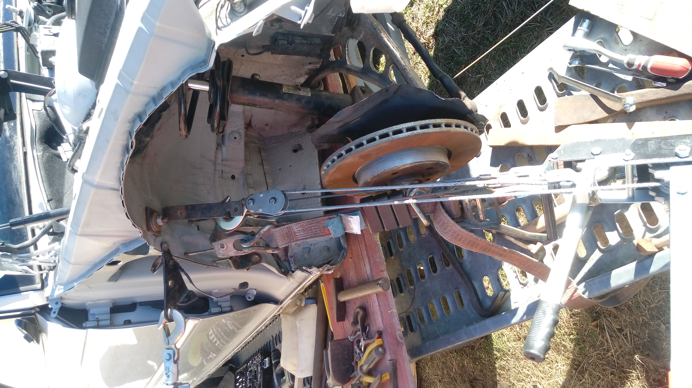
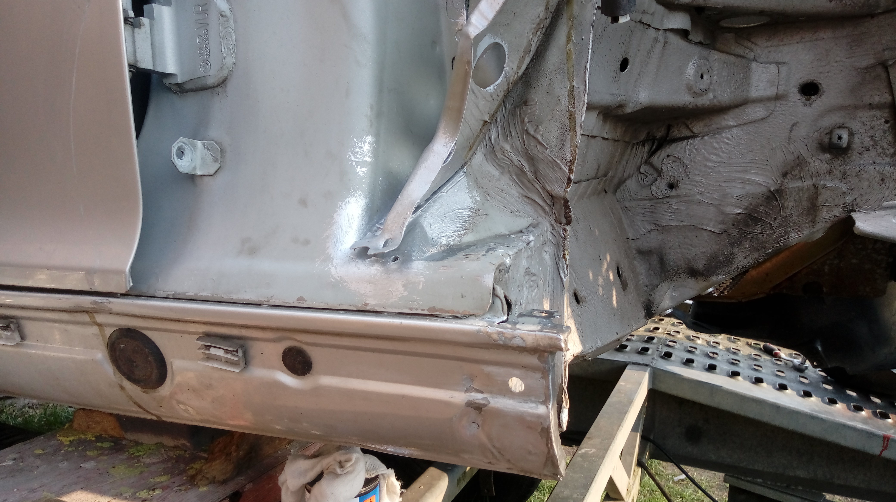
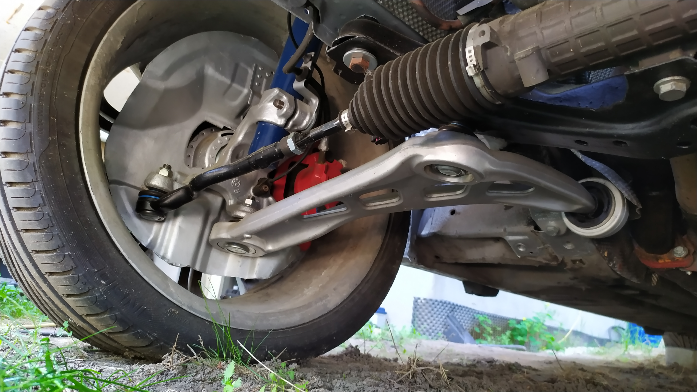

Przeprowadzone zmiany:
- Wymiana silnika z wankla na 2jz GE
- Restauracja podwozia i nadwozia
- Wymiana przednich hamulców
- Silnik wystrojny na ecumasterze
- Aktualana moc 240km 300Nm

Mazda
Przeprowadzone zmiany:
Przebieg 74000km, 20004 rok. Swap jak i inne prace wykonane na przełomie 2020/2021 roku.
Silnik
Wymiana silnika wankla na silnik z toyoty 2jz ge na komputzerze customowym ecumaster classic. Cała wiązka nowa wraz ze wzmocnionym rozrządem, wszytskimi uszczelkami i pierścieniami tłokowymi. Tylnia misa olejowa robiona na zamówienie z powodu braku dostępnych części na ryknu wtórnym. Blok silnika oczyszczony oraz pomalowany. Sprężarka klimatyzacji oryginał z mazdy rx8 przerobiona pod pasek klinowy od silnika 2jz.

Blacharka
Całe nadwozie oczyszczone, zamalowane podkładem antykorozyjnym oraz "barankiem". Nadwozie nie było w złym stanie ale przed swapem chciałem aby było w idealnej kondycji. Próg lewy jak i prawy wymagały naprawy w końcowych ich częściach. Lewy został wymieniony całościowo a prawy tylko końcówka ze wzglęgu na brak rdzy w pozostałej części.
 



hamulce
Oryginalne hamulce wymagały wymiany klocków na nowe a że tarcza była jeszcze oryginalana postanowaiłem wymienić całe hamulce na nowe od mercedesa AMG o średnicy 345mm. Zaciski zostały zamontowane na adapter. Minimalna średnica koła jakie można założyć to 18". Podczas hamowania czuć ogromną różnicę, polecam wszystkim na dokonanie takiego zabiegu.
video
drift
symulator
Bmw
 




